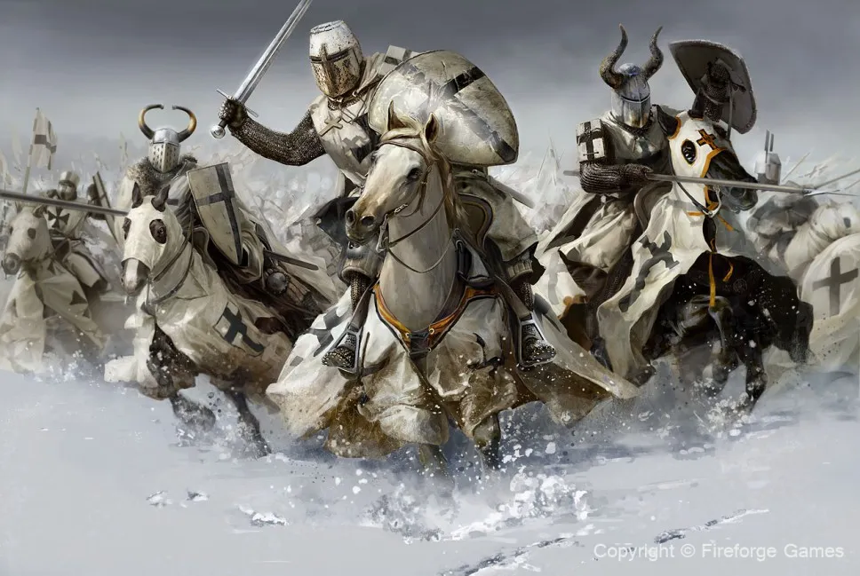
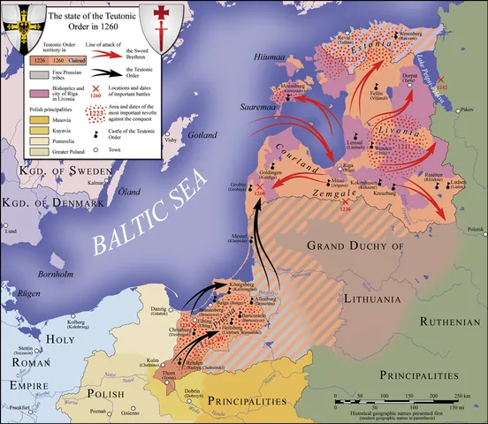

13th century Teutonic Order
Sources
About

기사단이란?
기사단은 기사들로 이루어진 군대로, 중세 전투집단의 심상을
지닌 집단은 기사수도회의 줄임말이라고 봐도 무방하며
중세 전투집단의 심상을 지닌 집단은 기사수도회의
줄임말이라고 봐도 무방하다.

튜튼 기사단이란?
튜튼 기사단은 3차 십자군이 진행 중이던 1190년
아크레 공성전때 뤼베크와 브레멘 상인들이
부상당한 십자군 병사들을 치료하기 위해서
세워진 야전 병원이 시작이며,
1192년 가톨릭 교황으로부터 기사단 조직 인가를
받은 뒤 구호 집단으로 활동했다.
그러다 1198년 튜튼 기사단은 교황의 승인을 받아
기사단의 임무는 이슬람 사라센족으로부터
예루살렘을 탈환하고 성지를 수호하는 것으로
바뀌었다.
History
튜튼 기사단의 역사

1211년 헝가리 국왕 언드라시 2세의 구호 요청으로
에르데이 지역으로 군대를 옮겨 쿠만족으로부터
헝가리를 보호했으나, 헝가리가 혼란스러워졌을 때
교황 호노리오 3세에게 기사단이 헝가리 산하에서
독립시켜 교황청 직속으로 놓아달라고 요청했다.
하지만 독립 시도는 곧바로 발각이 되었고 기사단의
배신에 분노한 언드라시 2세는 기사단을
1225년 에르데이에서 추방했다.

1226년 4대 기사단장이였던 헤르만 폰 잘차는 폴란트 왕국의
마조프셰 공 콘라트 1세의 요청으로
헤움노(쿨름) 지역에 거점을 마련한 뒤, 신성 로마 제국 황제
프리드리히 2세와 협정을 맺어
리미니 금인칙서를 통해 프로이센 지역의 소유권을 인정받고
콘라트와 함께 프로이센 원주민에 대한
북방 십자군 전쟁에 나선다.
1230년 5월 16일 기사단은 콘라트 1세와 크루슈비츠 조약을 맺었다.
조약 체결로 튜튼 기사단국(독일 기사단국)이 건국되었다.

1236년 사울레 전투에서 리투아니아 대공국에게
패배해 세력이 약해진 리보니아 검의 형제 기사단은
1237년 튜튼 기사단에 병합되었다.
1240년 기사단은 프스코프를 함락시켰고 이에
1242년 노보고로드의 알렉산드르 넵스키가
노브고로드 공국군을 이끌고 반격에 나섰다.
이 페이푸스 호 전투에서 기사단은 대패하면서
기사단은 루스 지역으로 진출하는 것을 포기하게 된다.
1260년 튜튼 기사단 영지에서 헤르쿠스 만타스가
이끈 프루스인들이 큰 반란을 일으켜서
많은 기사들이 전사하였다.

1279년 튜튼 기사단은 리투아니아와 아이즈크라우클 전투를 벌였으나
기사단은 이 전투에서
참패를 당하였으며, 그 결과로 총사령관 에른스트 폰 라스부르크와
덴마크령 에스토니아 출신 기사단장 에일라르트 호베르크를 포함한
71명의 기사가 전사했다.
이는 13세기 튜튼 기사단에게 두 번째로 큰 패배였다.
1291년 예루살렘 왕국이 아크레에서 멸망하자 리투아니아 원정을
단행하여 리투아니아의 상당 부분을 장악하였다.

Key events
1226년 리미니 금인칙서

1226년 신성 로마 제국 황제 프리드리히 2세가
발표한 리미니의 금인칙서는 튜튼 기사단에게
프로이센을 정복하고 통치할 권리를 부여했다.
이 칙서는 기사단이 정복한 모든 영토,
특히 이미 옛 프로이센인들을 상대로 한 공격의
거점으로 삼고 있던 헬름노 지역에 대한 황제의
통치권을 인정함으로써 기사단의 영토 확장을
합법화 했으며, 기사단은 명목상
교황의 주권 아래 있었지만, 이 황금칙서는
기사단이 상당한 자율성을 누리도록 보장했다.
기사단은 이 지역의 그리스도교 신자들을 규합하여
이교도를 격퇴하는 임무를 맡아
이교도 원주민을 정복하고 독일 동부 농민들을
이주시켜 프로이센 일대에 독일 기사단국을 세웠다.
1242년 페이푸스 호 전투

튜튼 기사단의 분파인 리보니아 기사단은 도르파트 주교령과 함께
북방십자군 전쟁동안
슬라브족과 정교회 신자들이 거주하는 지역으로 가톨릭 영향력을 더욱
확대하고자 했다.
그래서 1242년 러시아 정교회를 무너뜨리고 가톨릭을 전파하기 위해
러시아로 진격했지만,
알렉산더 네프스키 대공이 이끄는 노브고로드와 블라디미르-수즈달
연합군에게 패배하면서
이러한 노력은 좌절되었다. 동방에서의 이 패배로 인해 튜턴 기사단은
정교회 영토로의 확장보다는 발트해 지역의 지배력을 강화하고
옛 프로이센인과 리투아니아인에 대한 공격을 지속하는 데 초점을
맞추게 되었다.
1260년 프로이센 대봉기

1260년 두르베 전투에서 사모기티아인들이
리보니아 기사단과 튜튼 기사단을 상대로
큰 승리를 거둔 후 사모기티아족의 승리에
고무된 이 지역의 프로이센 부족들은
튜턴 기사단의 지배에 반기를 들었다.
튜튼 기사단 영지에서 헤르쿠스 만타스가 이끈
프루스인들이 대대적인 반란을 일으켜서
많은 기사들이 전사하였으나, 반란군은
통일된 지도력을 갖추지 못하고 각 씨족이
독립적으로 활동한 것이 약점이 되었고,
기사단은 독일로부터 다시 기사들을 영입하고,
프루스인들을 대대적으로 학살 및 추방하여
반란을 진압하고 후에 부족해진 인구는
독일에서 이민을 받았다.
Trivia
튜튼 기사단에 대한 평가

1525년 튜튼 기사단국, 즉 독일 기사단국의
기사단장인 알브레히트가 폴란드 왕 앞에서
봉신의 서약을 올리고, 기사단국을 세속화하여
프로이센 공국 창건했다.
프로이센 공국은 나중에 왕국이 되며, 독일을
통일하며 독일 제국이된다. 이 때문에
일각에서는 통일 독일 건국의 씨앗으로 보기도
하지만, 과거 튜튼 기사단이 기사단
영지 내에서의 큰 반란을 진압할 때 학살을
저지른 것과, 발트해 지역 주민들한테 저지른
학살과 노예 사냥, 그리고 강제 개종 때문에
발트 3국(에스토니아, 라트비아, 리투아니아)과
폴란드에서도 평가가 상당히 불쾌하고 좋지 않다.
군대 체계

기사단장: 튜튼기사단의 총 지휘관
총회를 통해 선출됨
대총감: 튜튼 기사단 내 기사단장 아래의 2인자
행정 업무 담당자
재무총감: 회계 담당자
의무총감: 병원 업무 담당자
의복총감: 군수/보급 담당자
사령관: 군사 참모총장
지역총감: 각 지역을 담당하는 지역사령관
튜튼 기사단은 독일, 프로이센, 리보니아의
지방단장이 존재하였음
리블란트 란트마이스터: 튜튼 기사단의
리보니아 지부장
프로이센 란트마이스터: 튜튼 기사단의
프로이센의 지부장
도이치 란트마이스터: 튜튼 기사단의
독일 지부장
지역군행관: 지방단장 아래에서
그 지역의 군사를 담당한 사령관
군행관: 10여 명의 수도기사와
100여 명의 병사를 지휘하는 사령관
수도기사: 귀족출신 기사
복무기사: 비귀족출신 기사
군대 구성

기사 형제 즉 리터브뤼더(Ritterbrüder)는 기사단 내에 정예병으로
군대의 핵심이였으며,
중무장한 기사의 역할을 수행했다.
기사단에는 교단의 일원이지만 교단에 봉직하겠다는 종신 서약을 하지
않은 사람들이 있었는데, 이를
반 형제, 즉 할프브뤼더(Halbrüder)라고 불렀다.
미트브뤼더(Mitbrüder)는 기사단 국가의 봉건 기사들이 기사단으로부터
영지를 하사 받은
다수의 독일계와 소수의 폴란드계 이주민들, 또는 폴란드
영주들이었으며,
그들 또한 기사로서 중무장 기병의 역할을 수행했다. 또한 이들은 종자와
서전트들을 거느리고
기사단 군대에 합류하기도 했다.
기사단이 정복한 땅의 원주민들은 개종 후에 보조병이 되었으며, 사각
방패와 가벼운 창을 사용하는
경기병이나, 도끼와 창 등을 들고 경보병 역할을 수행했다.
튜튼 기사단의 군사 행동의 특징은 이교도를 대상으로 하는 성전의
성격을 가지고 있었기 때문에
기사단장의 외교를 통해서 서유럽 전사들을 그들의 군대에 합류시킬 수
있었다.
이 덕분에 여러번의 패배 후에도 기사단은 다시 일어설 수 있었다.
기사단은 다른 나라들과 비슷하게도 용병을 고용했는데, 대부분 독일에서
고용되었지만,
제노바 석궁병과 잉글랜드 장궁병 같은 용병들도 고용했다.
흔한 고정 관념

대부분의 사람들은 '튜튼 기사단'을 떠올릴 때
검은 십자가와 각종 장식이 달린, 멋진 투구를
생각하곤 한다. 그러나 튜튼 기사단은
기사수도회 였으므로, 귀족들처럼
화려한 장식들을 달 수 없었고 검소하게
생활해야 했다. 그러면 이 화려한 장식의 헬멧은
어디에서 나온 것 일까? 바로 1938년 소련에서
제작된 '알렉산더 네프스키'라는 영화에서
튜튼 기사단을 잔혹하고 위협적인 존재로 표현하기
위해서 장식을 추가한 것이 시작이다.
그 후 튜튼 기사단을 다루는 매체에서 자주 사용
되었으나, 헬멧 장식을 사용했다는 근거는
불충분하고 사용했더라도 토너먼트에서만
사용했을 것이라고 추측된다.
매체 속에서의 튜튼 기사단
튜튼 기사단은 앞서 말한 고정 관념에 의해서 멋지고 강한 기사단으로
기억된다. 그렇기 때문에
튜튼 기사단은 다양한 매체의 주인공이 되기도 하며, 튜튼 기사단에게
집중적으로 공격을 당한
발트 3국이나 러시아는 강하고 잔혹한 존재들로 표현하기도 한다.


세가에 소속된 영국의 게임 개발사 크리에이티브 어셈블리가 만든 '토탈
워'라는 전략 게임 시리즈 중
'미디블2: 토탈 워 - 킹덤즈'와 토탈 워 아틸라에서 유저들이 만든 대형
모드인
미디블 킹덤즈 1212 AD에서 튜튼 기사단이 등장하였다.
두 게임 모두 튜튼 기병의 위력이 매우 강력하게 나왔으며,
'미디블2: 토탈 워 - 킹덤즈'에서는 사람들이 쉽게 생각하는 튜튼
기사단의 이미지를 잘 구현했고,
'미디블 킹덤즈 1212 AD'에서는 고증을 최대한 철저하게 맞추어서
현실감을 준다.
1938년 소련에서 제작된 '알렉산더 네프스키'라는 영화이다. 이 영화가
제작될 당시에
나치 독일과 소련 사이에 긴장감이 있었으며 그것을 잘 반영한다. 또한
알렉산더 네프스키를 국민 영웅으로, 튜튼 기사단은 잔혹한 침략자로
묘사했다.
이 영화의 가장 인상적인 장면은 1242년 페이푸스 호 전투를 묘사한
장면으로(57분 36초부터 기사단이 등장하고 1시간 1분 40초부터 전투가
시작된다),
역사적 고증을 잘 지키지는 못하였지만 CG 없이 전장의 모습을 잘
나타내었다.
참고로 이 영화는 독일 기사단을 악마화했다는 점 때문에
1939년 독소불가침 조약 체결 이후 상영이 중지되었으나, 그러다 2년 뒤
독소전쟁이 발발하자 상영 금지가 풀려 다시 극장에서 상영했다.
이 노래는 튜튼 기사단이 활동하던 중세에 만들어진 것이 아닌 1920년대
바이마르 공화국에서
만들어진 노래이다. 중세에 만들어진 노래는 아니지만 튜튼 기사단에
대해 표현한 노래 중
가장 유명한 노래이다.
Sources
namu.wiki
wikipedia
wikipedia
namu.wiki
namu.wiki
history-maps.com
wikipedia
ospreypublishing.com
facebook.com
namu.wiki
m.cafe.daum.net
youtube.com
youtube.com
ngonews.kr
warhistory.org
pinterest.com/
facebook.com
youtube.com
youtube.com
zinnfigur.com
wikipedia
namu.wiki
wikimedia.org
Medieval II: Total War: Kingdoms - 게임 내 사진
Total war ATTILA - Medieval Kingdoms 1212 AD - 게임 내 사진